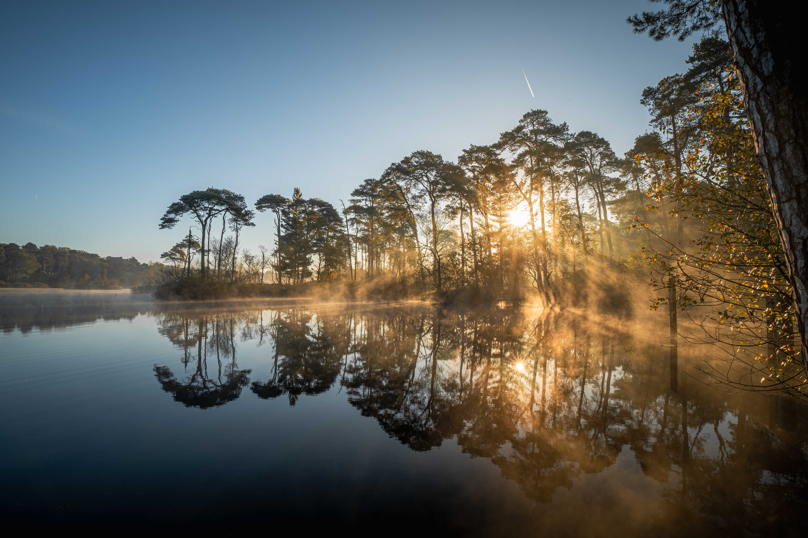
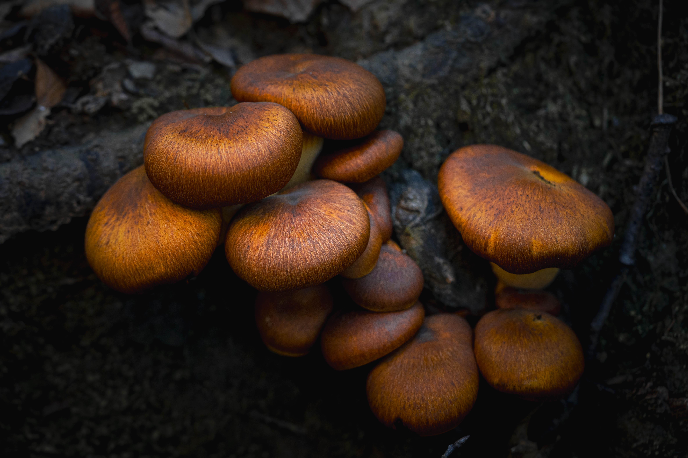
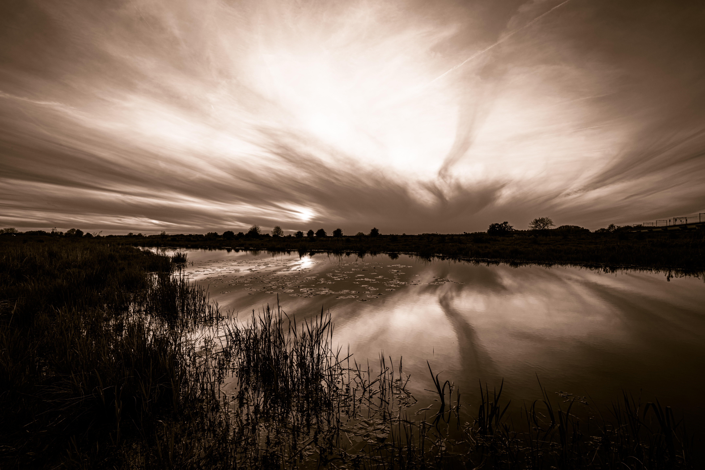
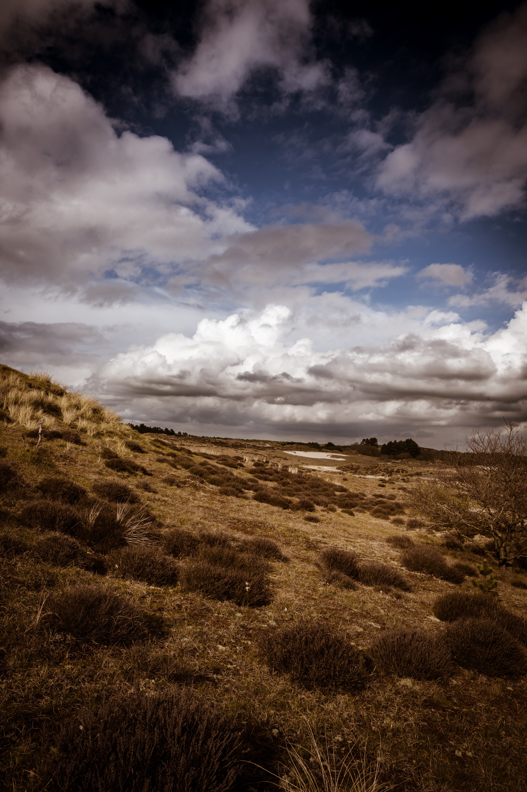
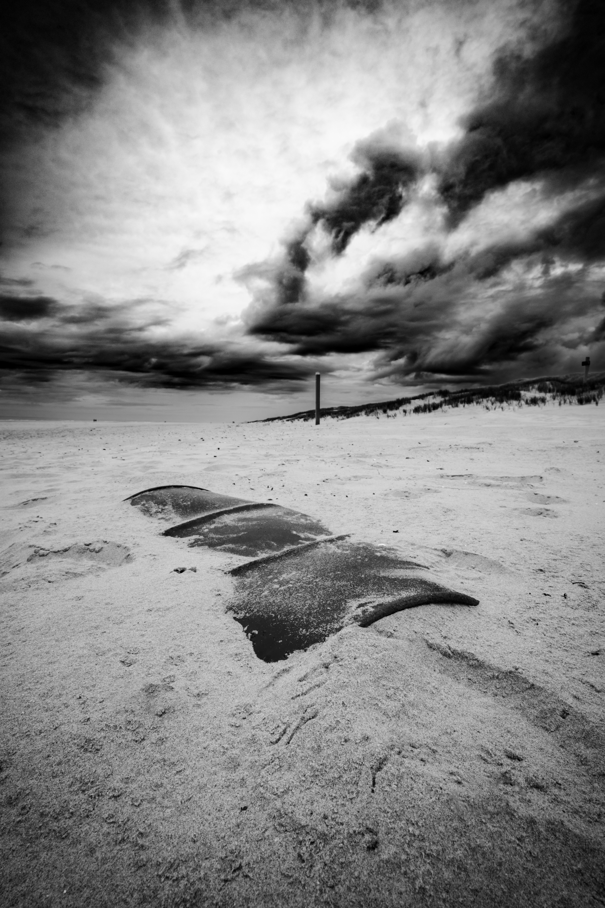
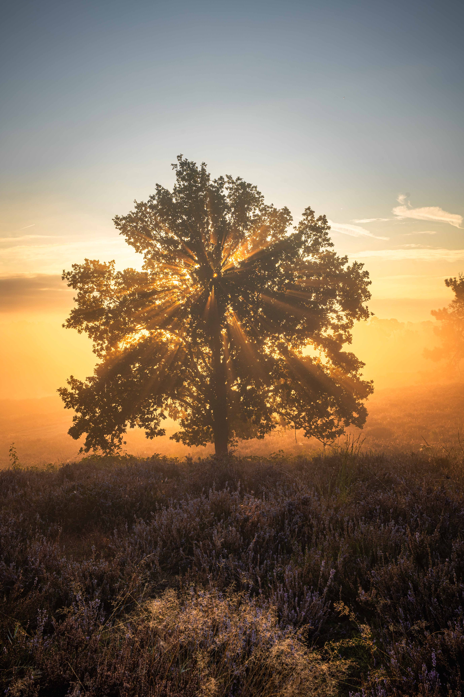

5 Tips voor Betere Landschapsfotografie
Ontdek hoe je meer diepte en drama in je landschapsfoto's kunt brengen met deze praktische technieken...
Fotograaf met een passie voor het vastleggen van bijzondere momenten, prachtige landschappen en tijdloze macro's.
softwareontwikkeling is mijn andere liefde. Geinteresseerd in .NET development? ga dan naar de .NET sectie van mijn website.

Landschapsfotografie is voor mij een vorm van meditatie in beweging. Terwijl de wereld nog slaapt, ben ik al onderweg naar die ene plek waar ik weet dat de natuur straks haar mooiste gezicht zal tonen.
Er is iets magisch aan die eerste uren van de dag. De stilte is zo diep dat je je eigen hartslag kunt horen. De lucht is fris en zuiver, nog onaangeraakt door de drukte van de dag. In die stilte voel ik mij verbonden met iets groters dan mijzelf - alsof ik deel uitmaak van het landschap zelf.
De dauw op het gras glimt als duizenden diamanten in het eerste licht. Elke druppel weerspiegelt de wereld in miniatuur, een perfecte samenvatting van de schoonheid die mij omringt.
Wanneer ik daar sta, met mijn camera gereed, voel ik hoe klein ik ben in vergelijking met de oneindige wijdheid voor mij. Maar paradoxaal genoeg voel ik mij tegelijkertijd groter - alsof ik deel ben van dit alles. De horizon strekt zich eindeloos uit, de hemel koestert de aarde, en ik sta daar als stille getuige van deze eeuwige dans.
Het is alsof de natuur mij toefluistert: haar geheimen, haar seizoenen, haar stemming van dat moment. Ik luister met alle zintuigen - niet alleen met mijn ogen, maar met mijn hele wezen.
Het vastleggen van deze schoonheid is bijna secundair geworden. De camera is mijn manier om deze intieme momenten met de natuur te delen, om anderen mee te nemen in die stilte, die rust, die wijdheid. Elke foto is een liefdesbrief aan het landschap dat mij zo raakt.
Het gaat niet om de perfecte compositie of de technische uitvoering - het gaat om het vastleggen van een gevoel, een moment van volmaakte harmonie tussen mens en natuur.
Terwijl anderen nog dromen, leef ik mijn droom. Ik ben getuige van zonsopgangen die de hemel in brand zetten, van nevelsluiers die mysterieus over de velden dansen, van landschappen die baden in gouden licht. Deze momenten zijn mijn beloning voor het vroege opstaan, voor de koude vingers, voor de lange wandelingen.
En wanneer ik thuiskom, draag ik een stukje van die stilte, die wijdheid, die verbondenheid met mij mee. Tot de volgende ochtend, wanneer de natuur mij weer roept.

Macrofotografie is voor mij veel meer dan alleen fotograferen - het is een reis naar verborgen werelden. Met mijn camera breng ik het kleinste dichtbij en ontdek ik details die het blote oog nooit zou waarnemen.
Het is alsof ik door een magische lens kijk die mij toegang geeft tot een parallelle wereld. Een druppel dauw wordt een kristallen paleis, de textuur van een bloemblaadje onthult een landschap van zachte heuvels en dalen, en de vleugel van een vlinder toont patronen die elke kunstenaar zou benijden.
Deze passie heeft mij geleerd dat schoonheid overal om ons heen bestaat - we hoeven alleen maar goed te kijken. Het kleinste insect draagt verhalen in zijn ogen, elke textuur vertelt over overleven en aanpassing. Macrofotografie dwingt mij tot geduld, tot stilte, tot observatie.
Het is meditatief - in die momenten dat ik bezig ben met scherpstelling op de fijnste details, verdwijnt de hectische wereld om mij heen. Er bestaat alleen nog dat ene moment, dat ene detail, die ene perfecte compositie.
Door het kleine groot te maken, laat ik anderen zien wat zij anders zouden missen. Het is mijn manier om de wonderen van de natuur te delen en mensen een nieuwe waardering te geven voor de complexiteit en schoonheid van de wereld op microscaal.

Zwart-wit fotografie is voor mij de meest pure vorm van visueel verhalen vertellen. Door bewust de kleur weg te nemen, leg ik de naakte waarheid bloot - de essentie van een moment, gevangen in tinten grijs, diep zwart en helder wit.
Paradoxaal genoeg ontstaat er meer door minder te tonen. Zonder de afleiding van kleur moet elk element in het beeld zijn verhaal vertellen door vorm, textuur, licht en schaduw. Iedere lijn wordt belangrijk, elke overgang van donker naar licht krijgt betekenis.
Het is alsof ik met een andere taal spreek - een universele taal die tijdloos is. Een zwart-wit foto van vandaag kan even goed uit 1950 komen, of over vijftig jaar genomen zijn. Deze tijdloosheid geeft mijn beelden een eeuwige kwaliteit die kleur nooit kan evenaren.
In zwart-wit tonen vind ik een emotionele diepte die kleur soms verhult. Verdriet wordt intenser in grijstinten, vreugde straalt feller in de contrasten tussen licht en donker. De rimpels in een ouder gezicht vertellen levensverhalen zonder dat kleur afleidt van de wijsheid in die ogen.
Elk zwart-wit beeld is een studie in contrast - niet alleen visueel, maar ook emotioneel. Licht tegen donker, jong tegen oud, vreugde tegen melancholie. Deze contrasten geven mijn foto's hun kracht en hun verhaal.
Zwart-wit fotografie dwingt mij tot focus op wat werkelijk belangrijk is. Ik moet denken in compositie, in lijnvoering, in de manier waarop licht een gezicht raakt of schaduwen een stemming creëren. Het is fotograferen in zijn meest essentiële vorm.
Wanneer ik door de zoeker kijk en de wereld al in grijstinten visualiseer, zie ik structuren die ik anders zou missen. De textuur van oude stenen, de rimpelingen in water, de manier waarop mist een landschap omhult - alles krijgt een andere dimensie.
Mijn zwart-wit foto's zijn stille gedichten. Ze vertellen verhalen zonder woorden, roepen herinneringen op zonder expliciet te zijn. Een silhouet tegen de ondergaande zon, de schaduw van een eenzame boom, de uitdrukking in iemands ogen - deze beelden spreken een universele taal van menselijke ervaring.
In een wereld vol kleur en chaos, bied ik met mijn zwart-wit fotografie momenten van contemplatie, van rust, van tijdloze schoonheid. Het zijn beelden die niet schreeuwen om aandacht, maar fluisteren hun verhalen aan wie de tijd neemt om te kijken.
Uiteindelijk gaat zwart-wit fotografie over licht - hoe het valt, hoe het vormt, hoe het emotie creëert. Elke foto is een dans tussen licht en schaduw, waarbij ik de choreograaf ben die bepaalt welke delen van het verhaal belicht worden en welke in de mysterie van de schaduw blijven.

Ontdek hoe je meer diepte en drama in je landschapsfoto's kunt brengen met deze praktische technieken...

Waarom zwart-wit fotografie nog steeds relevant is en hoe je krachtige monochrome beelden creëert...

Fotografie, en vooral Landschapsfotografie is op de juiste plek op het juiste tijdstip zijn. Maar waarom moet ik vroeg opstaan?
Foto beschrijving
1 / 10